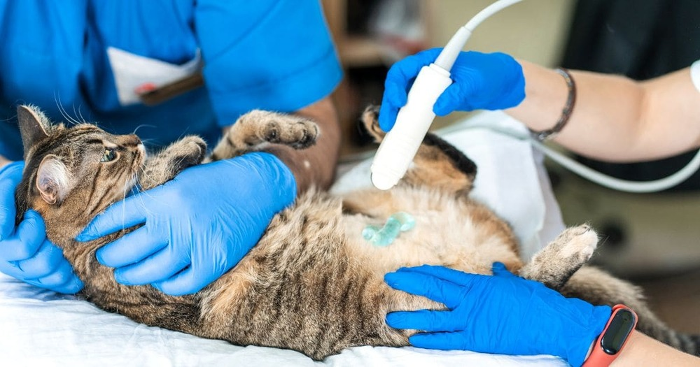
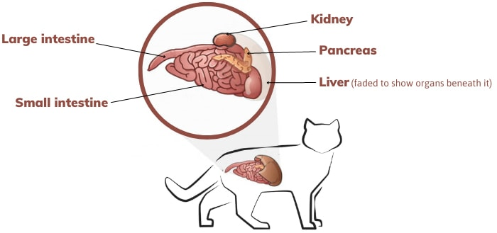

Is Pancreatitis in Cats Fatal? 4 Main Goals of Treatment
Discover the critical aspects of managing pancreatitis in cats, a condition that demands careful attention and timely intervention. If your feline companion has been diagnosed with pancreatitis, understanding the treatment goals is essential for their well-being.
Understanding Pancreatitis
Pancreatitis in cats involves the inflammation of the pancreas, a crucial organ responsible for digestive enzymes and insulin production. While the condition can be serious, timely and appropriate treatment can significantly improve the prognosis.
Key Treatment Goals
- Alleviate Pain and Discomfort: Provide medications to manage pain and discomfort associated with pancreatitis.
- Control Inflammation: Administer anti-inflammatory medications to reduce pancreatic inflammation.
- Address Underlying Causes: Identify and address any underlying causes contributing to pancreatitis, such as dietary issues or infections.
- Supportive Care: Offer supportive care, including fluid therapy and nutritional support, to aid in the recovery process.
It's crucial to work closely with your veterinarian to tailor a treatment plan that meets the specific needs of your cat, taking into account the severity of the condition and any concurrent health issues.